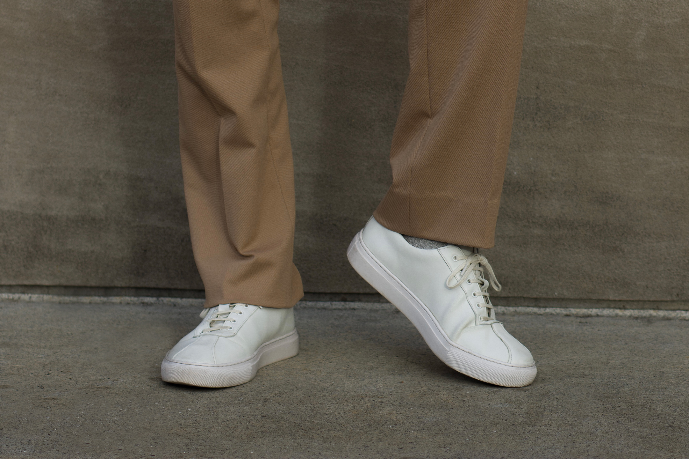
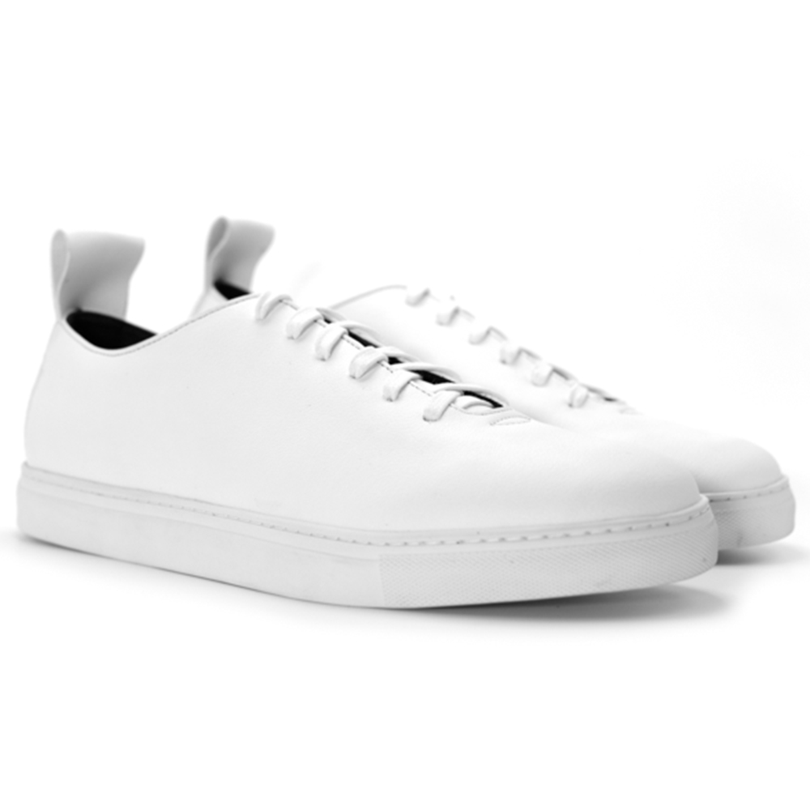
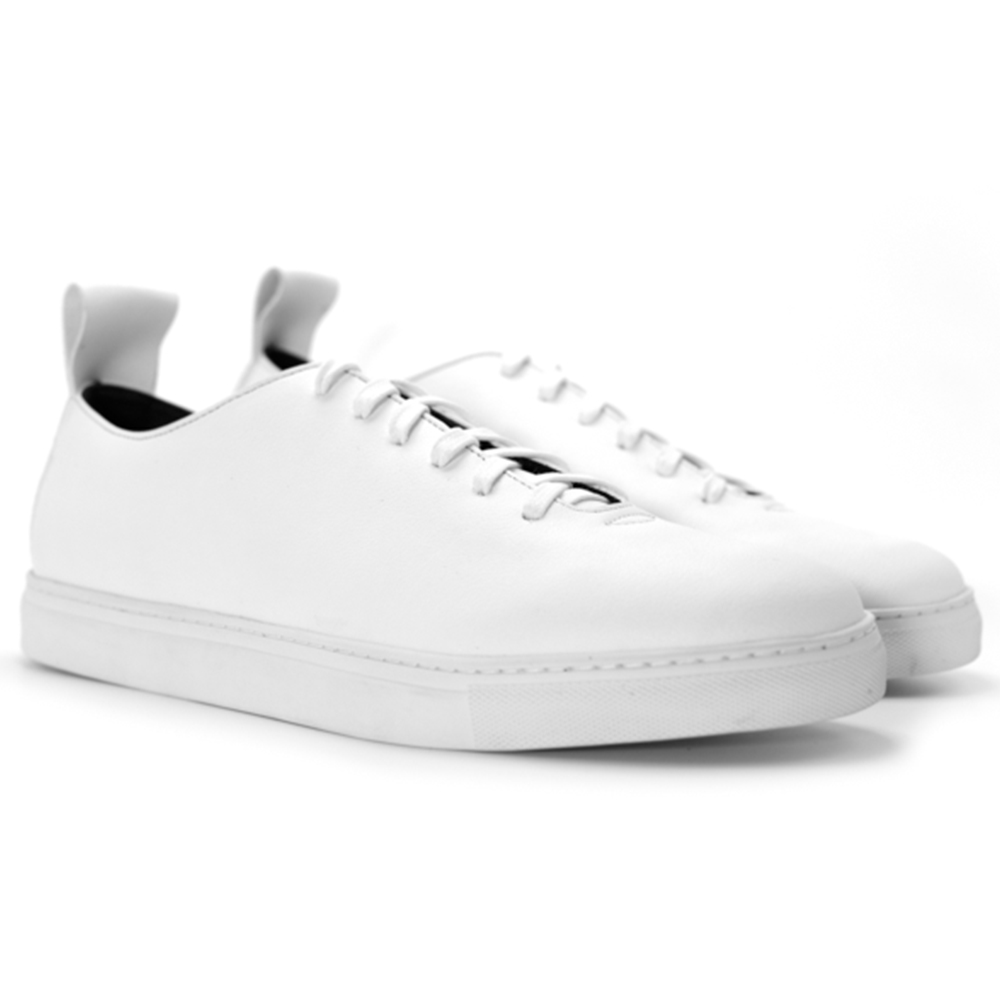

Jan 27
The Most Sustainable White Sneakers
A guide to finding a sustainable and cruelty-free alternative to Common Projects.

Oh the love our generation can have for a nice pair of white sneakers. In a time where the infamous Common Projects are all the hype, I wanted something more than just a good quality white sneaker. I spent many hours researching the most sustainable alternatives to Common Projects’ Achilles Low and BBall Low. In my search I was able to find about 7 different companies making high quality cruelty-free white sneakers which I felt have a design similar to Common Projects, 4 of which I will be highlighting in this blog post. If you’re like me and prefer the more ethical and sustainable choice when it comes to fashion, I have provided a list of cruelty-free white sneakers which do not compromise on quality.
Grenson: Sneaker 1

This is one of my go-to pairs in my closet. Grenson has been perfecting their genuine leather line for a while now so it is nice to see they've branched out with their same methods in a more ethical collection.
Shop Now
Humans Are Vain: Tide Sneaker

As far as quality goes, these are by far the most durable and comfortable vegan sneakers I've worn. Eden is another pair they sell which give a slight nod to the AF1 / BBall look.
Shop Now
Thousand Fell: Lace Up
The minimal silhouette on these offers one of the cleanest looks I've come across for a vegan sneaker. I've yet to try a pair myself, but these seem like a promising alternative.
Shop Now
Yatay: Neven Low

If you are a fan of innovative material, these may be the sustainable option you're looking for. They use a raw material known as bio-polyols which contains polymers extracted from cereals. Similar to Humans Are Vain, Irori is Yatay's own take on the AF1 / BBall sneaker.
Shop NowNow of course in the end, I believe secondhand purchases are the most sustainable option. Websites like Grailed and Depop are constantly selling barely worn Common Projects sneakers. However, this list was created to promote the brands who are making a difference and contributing to a more conscious and animal-free lifestyle.
I have provided an additional list below of some of the other brands I found in my research. If you’re still reading this then I’m assuming sustainable fashion is something you have an interest in. Whether this is true or not, I hope this list has helped you in your effort to make more conscious purchases this year.
Runner-Ups
 
